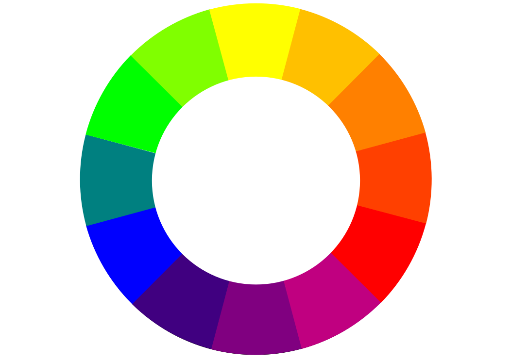

La plupart d’entre nous ont, à un moment ou un autre, discuté avec des amis du nom des couleurs. Je me souviens de nombreuses conversations où je ne parvenais pas à me mettre d’accord sur le nom à donner à une couleur. On débattait souvent pour savoir si un objet était vert ou bleu, rouge ou brun, etc. J’ai appris douze couleurs pendant mes premières années d’école, et je pense que ce nombre est monté à une vingtaine, voire une trentaine, par la suite. Avec le recul, je me rends compte qu’il est difficile de nommer les couleurs de manière précise si l’on ne prend pas en compte toutes les variations possibles pour une même teinte.

Je crois que la première fois que je me suis interrogé sur les aspects techniques des couleurs, c’était en découvrant ce sujet dans mon manuel de graphisme informatique. Un écran d’ordinateur est composé de pixels, et la couleur de chaque pixel que nous voyons résulte de l’intensité combinée de trois couleurs : rouge, vert et bleu (RGB)1,2. Ce modèle est utilisé pour représenter les images numériques. Les couleurs ont alors pris un tout autre sens pour moi. J’ai compris qu’avec seulement 8 bits pour chacune des trois composantes (rouge, vert et bleu), on pouvait représenter plus de 16 millions de couleurs (28 = 256, et 256 × 256 × 256 = 16 777 216). Ce fut une véritable révélation.
Quand on commence à apprendre une nouvelle langue, on tombe souvent sur un chapitre consacré aux noms des couleurs. Jusqu’à présent, toutes les langues que j’ai rencontrées comprenaient des termes pour désigner le blanc, le noir, le rouge, le vert, le bleu, le jaune, l’orange, etc. Mais qu’en est-il des autres couleurs ? Il est difficile d’imaginer qu’on puisse attribuer un nom à chacune des 16 millions de teintes possibles.
Mes recherches personnelles sur les langues m’ont appris que les linguistes ont déjà longuement étudié l’usage des couleurs dans les textes. Il est toujours fascinant d’imaginer comment les couleurs étaient perçues dans les civilisations anciennes, selon les régions du monde. J’ai notamment découvert une référence à la critique de Gladstone sur Homère dans le livre Studies on Homer and the Homeric Age3, mentionnée dans des études linguistiques. Peut-on en déduire que les civilisations antiques se limitaient au noir et au blanc, parce qu’elles ne possédaient pas de mots pour désigner les autres couleurs ? Je me demande si je serais capable de choisir un objet de ma couleur préférée sans connaître son nom. Il y a eu toute une époque, avant l’ère numérique, où la photographie argentique était la norme, et où les téléviseurs utilisaient des tubes cathodiques. L’absence de noms pour désigner les couleurs ne nous empêchait pas de créer.
Aujourd’hui, à l’ère du numérique, il est possible de définir une couleur avec une grande précision grâce aux valeurs RGB. Certains d’entre nous, en naviguant sur Internet, ont peut-être déjà utilisé un disque chromatique4, une palette de couleurs ou une gamme colorée5. La plupart de ces outils permettent de choisir une couleur en indiquant ses valeurs RGB, et certains utilisent aussi le modèle HSL (teinte-saturation-luminosité)6. Avec les progrès technologiques, il sera peut-être possible d’atteindre une précision encore plus grande7 dans le choix de nos couleurs. Aujourd’hui, nous pouvons déjà partager et discuter de couleurs à l’aide de valeurs numériques, sans forcément utiliser de noms.
J’ai deux chemises bleues qui sont très différentes l’une de l’autre. Pourtant, quand on me demande leur couleur, je réponds simplement « bleu ». Même si certaines langues ont enrichi leur vocabulaire pour désigner différentes nuances de bleu, il reste peu probable que l’on parvienne un jour à créer un terme spécifique pour chacune des 256 variations possibles de cette couleur. Comment les langues vont-elles évoluer à l’avenir, quand il faudra désigner une couleur préférée au sein d’un spectre infini de tonalités ?